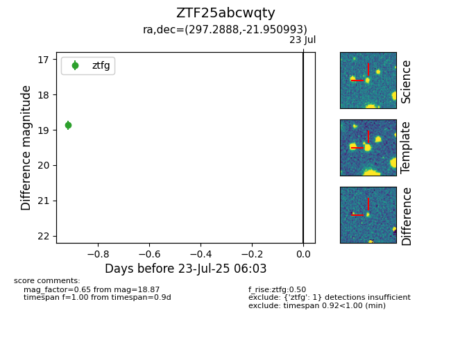

Target ZTF25abcwqty at 2025-07-23 12:37, see:
FINK: fink-portal.org/ZTF25abcwqty
Lasair: lasair-ztf.lsst.ac.uk/objects/ZTF25abcwqty
ALeRCE: alerce.online/object/ZTF25abcwqty
alt names
ZTF25abcwqty (ztf,fink)
coordinates:
equatorial (ra, dec) = (297.2888,-21.95099)
galactic (l, b) = (18.7313,-22.09526)
photometry
last ztfg=18.87
1 ztfg detections
